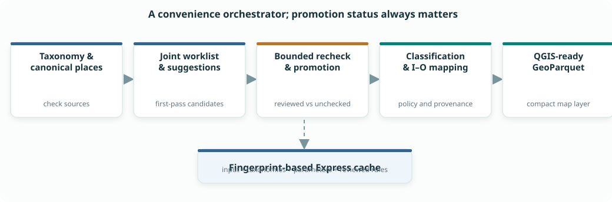

Express: the automatic end-to-end workflow
`placetype express` is an orchestration layer over the existing taxonomy importer, joint worklist, suggestion/recheck, deterministic classifier, and GIS exporter. Its defaults are convenient; they are not equivalent to a fully adjudicated mapping inventory.
The execution plan

The pipeline generally performs these phases: verify input; acquire or reuse taxonomies; seed a joint category worklist; generate lexical suggestions; recheck with bounded cross-taxonomy context; report what was reviewed, promoted, held, or unresolved; classify using the resulting joint crosswalk; append I–O candidate sets; write a compact QGIS-ready GeoParquet.
The four promotion states you must distinguish
State in express_status |
Semantics |
|---|---|
REVIEWED |
Existing reviewed mapping preserved. |
AUTO_ACCEPTED |
Machine proposal cleared by an available peer recheck. |
AUTO_ACCEPTED_INCONCLUSIVE |
Peer recheck was weak/inconclusive but policy allowed promotion. |
AUTO_ACCEPTED_UNCHECKED |
No usable recheck verdict; default policy still promoted the suggestion. |
Held states include HELD_RECHECK, HELD_INCONCLUSIVE, and HELD_NO_VERDICT. UNRESOLVED remains without an adopted code. COARSENED can produce a narrowly checked PCPC sibling-parent backoff for automatic suggestions; it does not override reviewed human mappings.
The default promotion policy
Express defaults to --promote-unchecked and does not hold weak inconclusive rechecks unless requested. This maximizes useful initial coverage while explicitly labeling unverified promotions. It is not the conservative setting for a scientific accuracy benchmark.
Use --no-promote-unchecked to hold no-verdict suggestions and --hold-inconclusive to hold weak shifts separately. A one-scheme run has no peer taxonomy to compare with and so may produce a large number of unchecked suggestions; the CLI warns about this.
$places = "..\openplaces-ph\data\output\areas_metro_manila\canonical_pois.parquet"
placetype express $places --workers 1 --hold-inconclusive
if ($LASTEXITCODE -ne 0) { throw "Express failed" }
Cache identity and reproducibility
Express computes its run key from the OpenPlaces input state, selected schemes, package version, taxonomy fingerprints, reviewed worklist states, product-column selection, promotion policies, retrieval/classifier tuning, I–O resolver policy and content fingerprints of the bundled reviewed PSIC CSV, the version bridge, the concordance, official hierarchy, subgroup refinement table and direct I–O rules. The selected resolution policy and full content hashes of the opt-in institutional configuration and all referenced files are part of the key; the semantic cache version is joint-v9.4.5-classification-completion-hardening.
Choose placetype express $places --io-resolution-policy extended for exploratory coverage with labelled provisional evidence, or omit the option for strict mode. Use different --output paths to preserve separate final GIS exports. The console reports actual resolved coverage and withheld provisional singletons separately from candidate/map-ready coverage.
Inputs under 8 MiB use a content hash; larger inputs use file size and modification time as a cheaper identity. This is a performance trade-off: timestamp/size identity is less robust to adversarial or unusual in-place changes. Completed runs are checked against manifest and required output files/schema before reuse; this does not independently revalidate empirical accuracy.
Where Express writes data
Temporary worklist state lives in data/work/express/<cache-key>/; reusable classification runs live in output/express/<cache-key>/. The default final GIS output is output/<input-scope>_placetype.parquet. Express does not modify the upstream OpenPlaces Parquet.
When not to use Express
For controlled comparison of the reviewed deterministic PSIC policy, use placetype classify --schemes psic --llm none directly. That isolates the reviewed rule inventory and avoids accidental promotion of machine guesses. For model-based classification on unresolved cases, the lower-level classify command offers explicit LLM settings.
Implementation: express.py · cli.py.